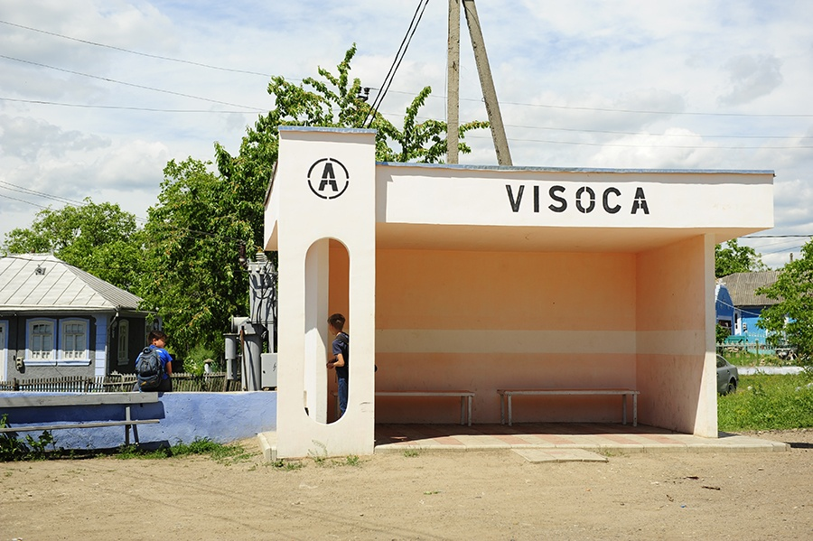
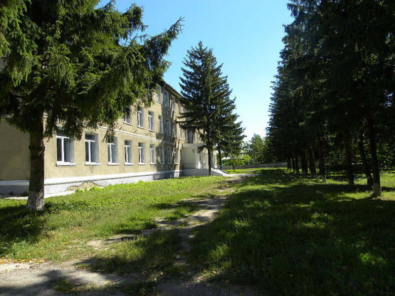
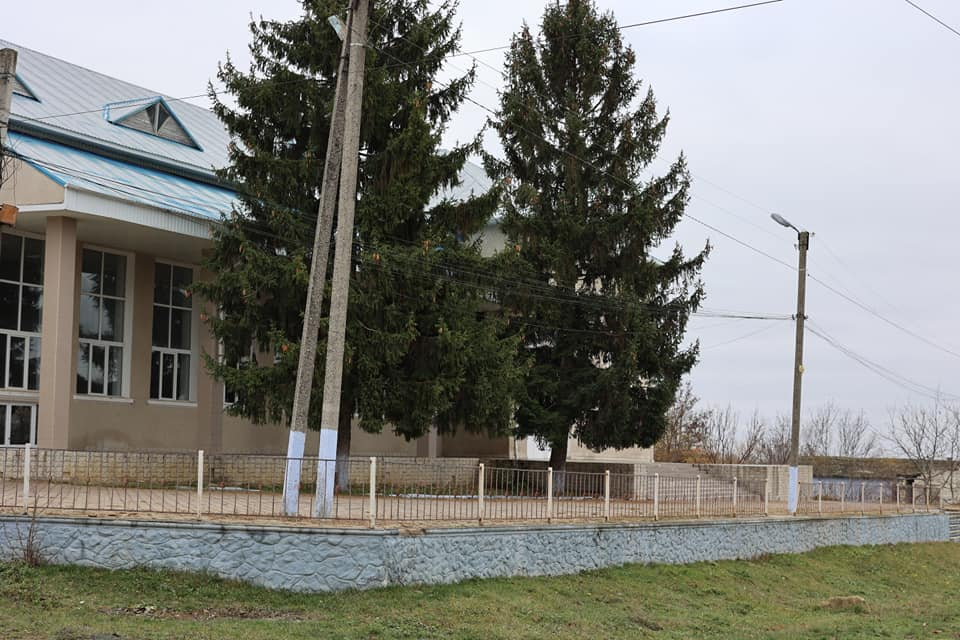
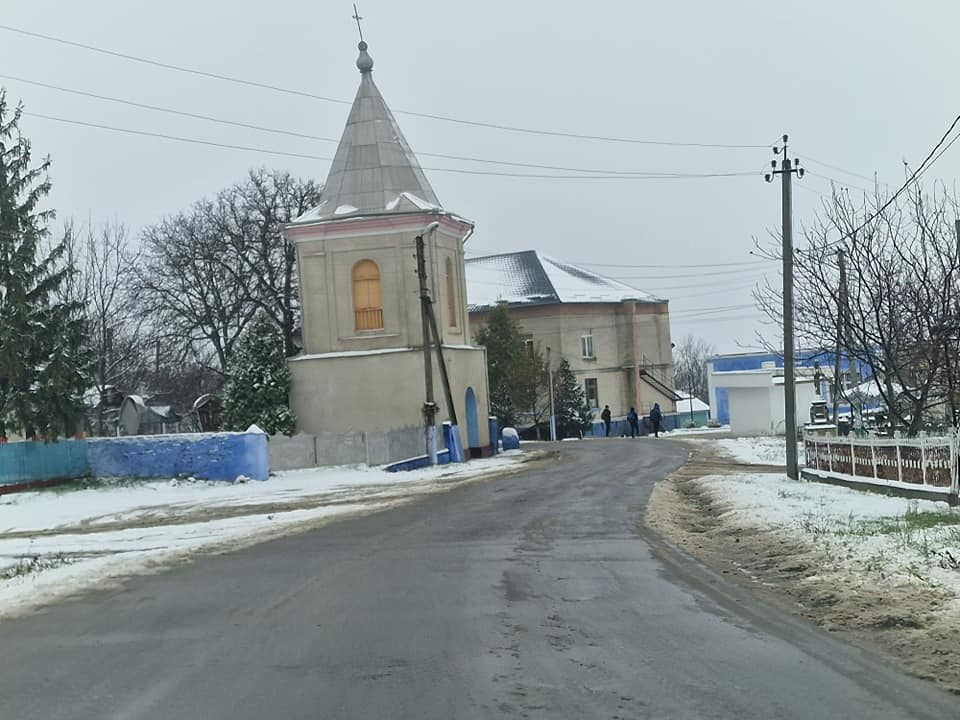
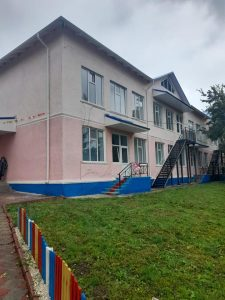
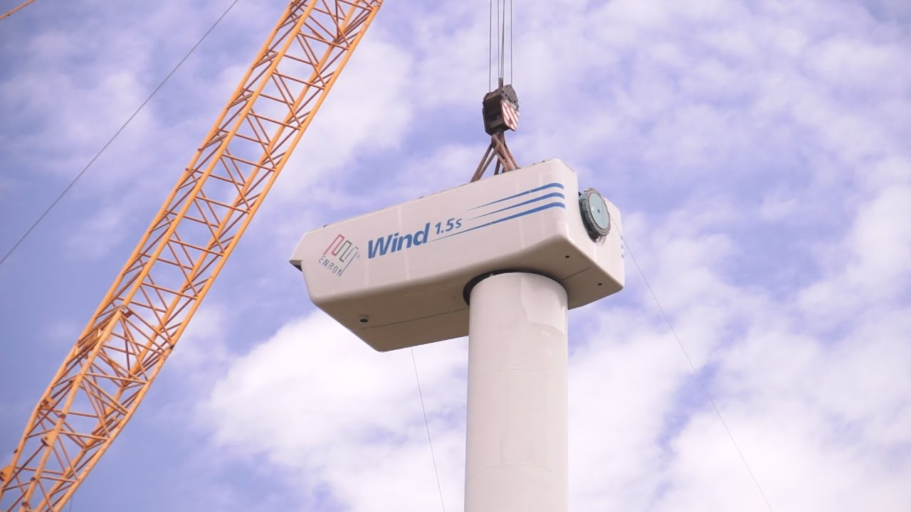
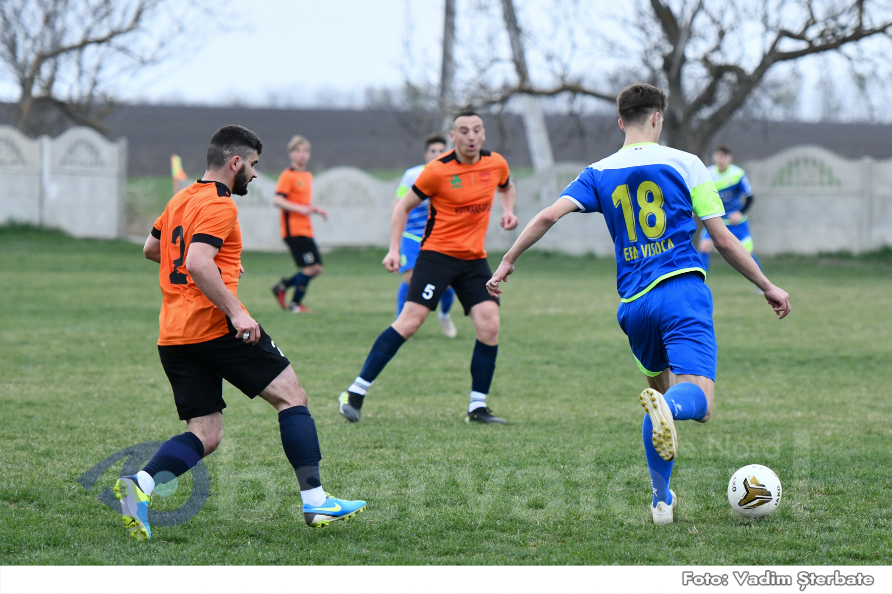

Pezentarea satului Visoca
Numele satului
Numele topic Visoca apare în cartea domnească de la Ștefan al II-lea,
fiul lui Alexandru cel Bun, emisă la 10 mai 1439. Însă, documentar,
satul Visoca este atestat la 13 iunie 1599.
Nu există vreun document care s-ar referi direct la numele satului Visoca.
”Dealul înalt” — acesta a fost numele inițial al satului Visoca, însă toponimul
a fost mai întâi slavizat și ortografiat ”Visokii deal”.
Descrierea așezării geografice
La nord-vest de sat se ridică delușorul
compus din calcar, denumit Varnița. Piatra din cariera de
acolo este un valoros material de construcție. Spre est de sat,
în direcția Nistrului, se ridică Dealul Geamăna, având înălțimea
de 320 m deasupra nivelului mării. La poalele Geamănei începe Valea Hârtopului.
Unindu-se cu valea care traversează satul dinspre nord, ele formează Valea Fetei,
ce se deschide în Valea Căinar, la Cotova.
Ce avem

La 1 ianuarie 2023, în satul Visoca locuiau 1650 de cetățeni. Fondul funciar al
Primăriei cuprinde 4.111 ha:
*2.436 ha — pământ arabil,
*168 ha — livezi,
*570 ha — pășune,
*406 ha — păduri.
Liceul Teoretic

În anul 2007, școala medie din sat obține statut de Liceu Teoretic,
care activează până în prezent, și datorită acestui fapt Visoca din nou a devenit un centru de
atracție pentru satele din împrejurimi. La Liceul Teoretic Visoca în anul de studii 2022-2023
învață 250 de elevi din satele Visoca,
Teleșeuca, Niorcani, Tătărăuca Veche, Tătărăuca Nouă, Rudi, Dărcăuți, Mălcăuți, Bădiceni.
Casa de Cultură

Casa de cultură și-a început activitatea în anul 1975 și a activat până în anii 2000.
După anii 2000, era nevoie de o reparație capitală. Abia în anii 2009-2012, conform unui
proiect
aprobat de către Guvernul RM, a fost efectuată o reparație capitală care a costat peste
3000000 lei. Din 2012, Casa de cultură și-a reluat activitatea.
Biserica

Biserica a existat încă prin 1772. În 1803, e atestată biserica ”Sfinții Arhangheli Mihail și
Gavriil”, dotată suficient cu veșminte, obiecte sacre și cărți
necesare pentru slujbele religioase. În 1826 a fost construită clădirea din piatră a bisericii.
În 1996-1998 biserica a fost reparată capital. Visoca biserica a activat fără întrerupere.
Grădinișa de copii Prichindel

Începutul anului școlar 2021-2022 va rămâne în memoria locuitorilor satului Visoca,
îndeosebi a părinților și picilor lor. În acea zi, după 27 de ani, a fost (re)deschisă
Grădinița de copii. 68 de copii frecventează în prezent instituția .
Turbine eoliene

În iulie 2021 În satul Visoca, a început crearea unui parc eolian,
care este primul de acest fel din raionul Soroca.
Primele două turbine eoliene au fost deja instalate. Urmează să fie montate încă 5 turbine.
Sportul în viața noastră

Între anii 2020-2021 primăria Visoca a înregistrat două echipe de fotbal-FC Visoca și EFA Visoca,
care joacă in divizia B a Campionatului Moldovei. Au fost create și două echipe de juniori, care deasemenea participă
la competițiile republicane și internaționale.
Istoria satului Visoca